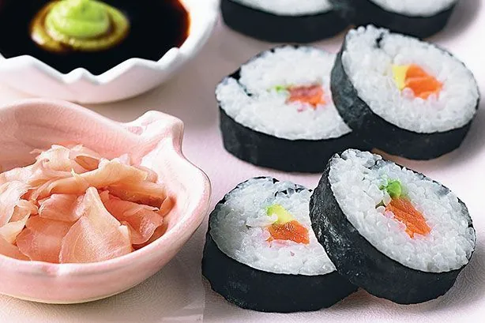

Main Dishes
Fried Chicken
Crunchy fried chicken served with a fresh cilantro-yogurt chutney.

Every step is ticked off. Want to cook it again?
Main Dishes
Crunchy fried chicken served with a fresh cilantro-yogurt chutney.

Main Dishes
Turkish-style spaghetti coated in a tomato and red pepper paste sauce.

Main Dishes
The classic Margherita: tomato sauce, fresh mozzarella and basil.